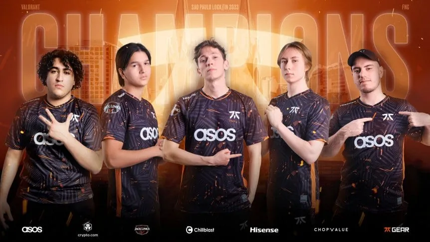

Fnatic se consagró campeón del Lock/In de VALORANT

El VALORANT Lock/In, torneo que puso en marcha la renovada temporada competitiva de franquicias en el shooter de Riot Games, comenzó el 13 de febrero en Brasil con los 30 equipos que fueron seleccionados por la compañía para representar a sus respectivas regiones y ya tiene campeón: Fnatic.
El conjunto europeo redondeó un torneo impresionante y superó en la final a los locales de LOUD, campeones del mundo en 2022, por un ajustado 3-2. Fue 13-8, 13-7, 9-13, 8-13 y 14-12.